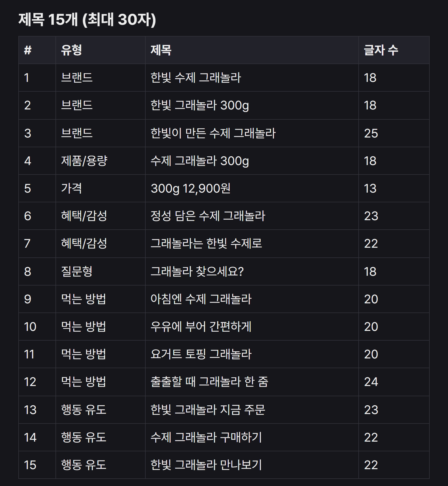
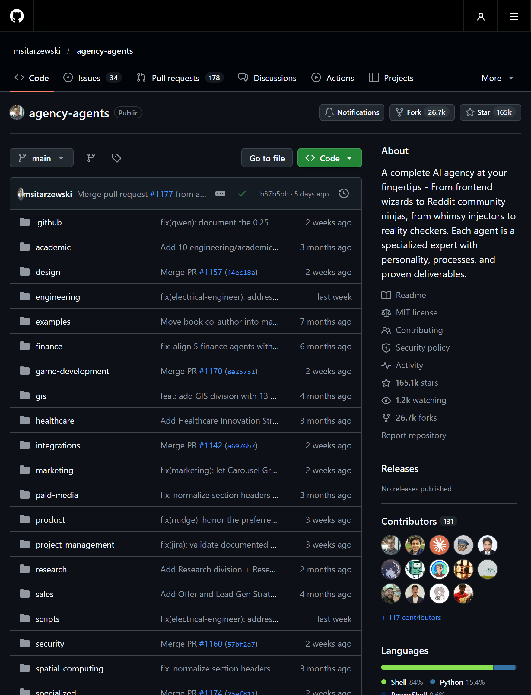
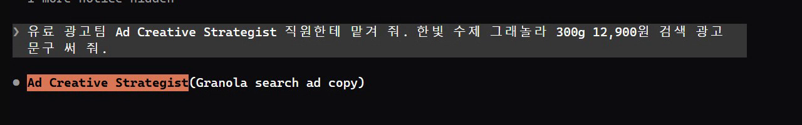
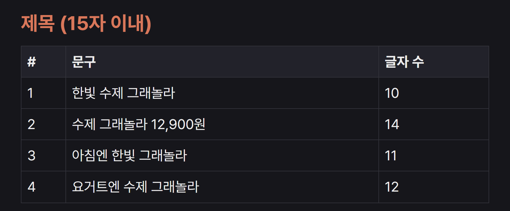
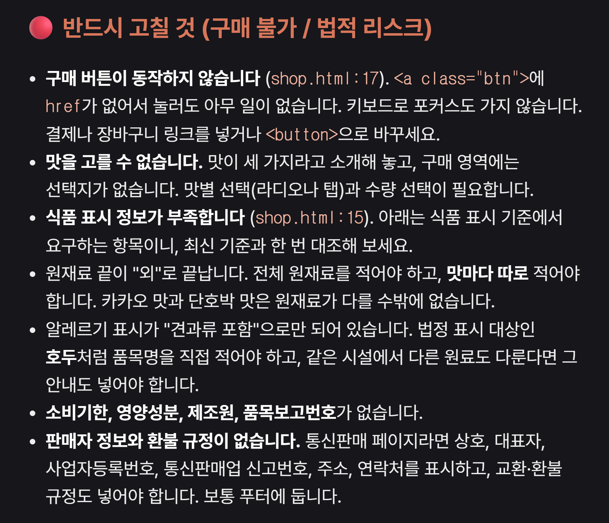
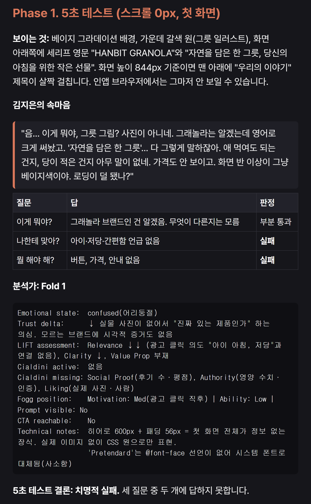
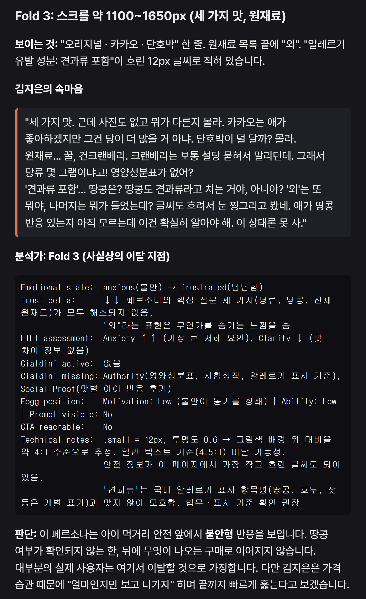
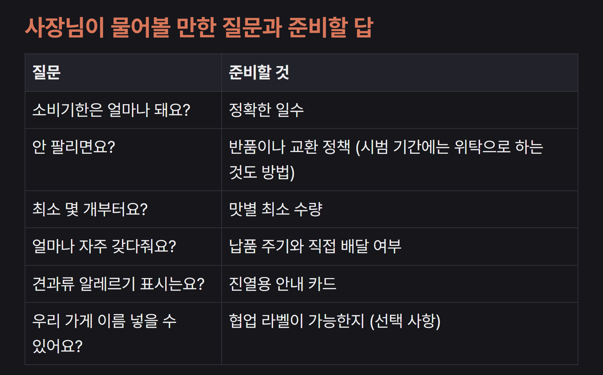
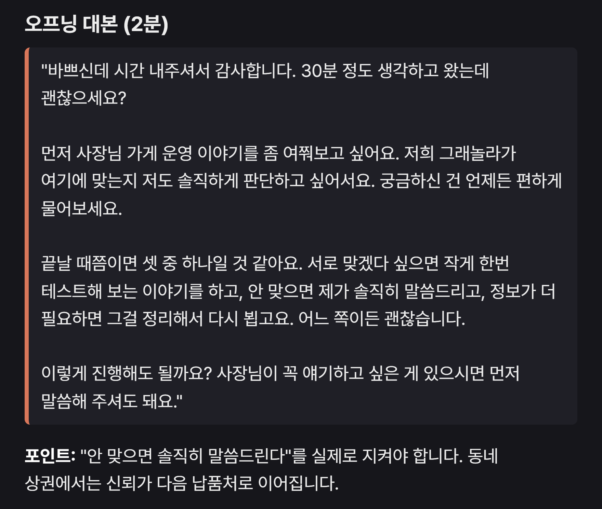
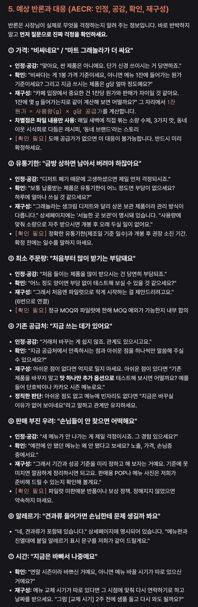

agency-agents는 AI한테 붙이는 '직원 파일' 묶음이에요. 무료 오픈소스(MIT)이고, 부서 18곳에 직원 283명이 들어 있어요. 직원 한 명이 글 파일(.md) 하나예요. 파일 안에 맡는 일, 꼭 지킬 규칙, 답을 어떤 모양으로 낼지가 적혀 있어요. Claude Code의 agents 폴더에 넣고 '이 직원한테 맡겨 줘'라고 하면, 그 파일을 따르는 일꾼이 따로 떠서 일해요. 아래는 저희가 같은 짧은 요청을 직원 없이, 그리고 직원을 붙여서 각각 돌려 본 결과예요.

전부 깔 필요 없어요. 쓸 직원 파일만 내 컴퓨터의 Claude Code 직원 폴더(사용자 폴더 아래 .claude\agents)에 복사하면 돼요. 아래 '설치(윈도우)' 세 줄을 명령 프롬프트에 넣으면 유료 광고팀 광고 문구 직원 하나가 들어가요. 다른 직원은 마지막 줄의 폴더·파일 이름만 바꾸세요(부서 폴더: 아래 '부서 이름표'). 한 프로젝트에서만 쓰려면 그 프로젝트 폴더의 .claude\agents에 넣어도 돼요. 넣은 뒤엔 Claude Code를 새로 여세요. 맥·리눅스는 README의 install.sh, 클릭으로 까는 데스크톱 앱(agencyagents.app)도 있어요(저희는 윈도우 파일 복사로 확인했어요).

Claude Code에서 '(직원 영어 이름) 직원한테 맡겨 줘. (할 일)'이라고 적으면 돼요. 이름은 파일 맨 위 name: 줄에 있어요(예: Ad Creative Strategist). 요청 끝에 '직원 결과를 고치지 말고 그대로 보여 줘'를 붙이면, 직원이 낸 결과를 Claude가 줄이지 않고 그대로 보여 줘요. 내 파일을 봐야 하는 일이면 그 파일이 있는 폴더에서 Claude Code를 여세요. 빈칸 틀은 아래 '복사해서 쓰기'에 있어요.

직원마다 답 모양이 정해져 있어요. 광고 문구 직원은 '제목 15개(종류·글자 수) → 설명 → 운영 방법 → 네이버용 → 확인할 것' 순서예요. 손님 시점 직원은 '가상 손님 프로필 → 첫 화면 5초 테스트 → 화면 칸마다 손님 속마음 + 분석가 평가 → 판정(어디서 나가려 했나) → 고칠 것(바로·며칠·계획) → 확인할 가설'이에요. 첫 미팅 코치는 '먼저 정할 것 → 성공 기준 → 사전 조사 → 30분 순서·첫마디 대본 → 질문 목록 → 예상 반대 의견과 대답 → 시범 운영안 → 마무리 대본'이에요. [확인 필요]·[가정] 표시는 직원이 모르는 걸 지어내지 않고 남긴 자리예요 — 채워서 다시 맡기세요.
[확인 필요] 자리에 실제 값을 채워(예: 배송비 3,000원, 카페 공급가 8,000원) '이 정보로 같은 직원한테 다시 맡겨 줘'라고 하면 돼요. 손님 시점 직원은 손님을 바꿔(예: 50대, 선물용으로 검색) 다시 돌리면 다른 손님이 어디서 막히는지 볼 수 있어요. 고친 페이지를 넣고 다시 돌려 전후를 비교해도 돼요(이 부분은 저희가 다시 돌려 보지 않았어요).
쓰기 좋은 때: 늘 같은 양식으로 받고 싶은 일(광고 문구, 판매 페이지 점검, 미팅 준비, 보고 요약), 내가 그 분야 절차를 잘 몰라서 순서·체크리스트가 필요한 일, 매번 길게 역할 설명을 쓰던 일. 안 맞는 때: 짧은 질문 하나(직원이 길게 답해요), 전문가 판단이 꼭 필요한 일(법·세금·의료 — 참고용), 중국 플랫폼 전용 직원(샤오훙수·위챗 등)처럼 한국에서 안 쓰는 곳. 저희가 해 보니 계약서 검토·회의록 정리는 직원 없이 물어도 답 모양이 거의 같았어요 — 차이가 큰 건 '정해진 양식이 있는 일'이었어요.
같은 요청 '한빛 수제 그래놀라 300g 12,900원 검색 광고 문구 써 줘.'를 두 번 넣었어요. 직원 없이: 제목 4개·설명 3개(네이버 기준). 직원 붙임: 구글 제목 15개를 브랜드·제품·가격·혜택·질문형·먹는 방법·행동 유도로 나눠 글자 수와 함께, 설명 4개, 운영 방법, 콜아웃, 네이버 제목 6개·설명 4개, 소재 테스트 방법까지 나왔어요. 알려 주지 않은 성분·할인·후기는 넣지 않았어요.

시연용 판매 페이지(shop.html)로 '판매 페이지 검토해 줘.' 직원 없이: 고칠 점 16개를 급한 순서로(버튼 링크, 배송비, 사진 등). 직원 붙임: 가상 손님 김지은(36세 맞벌이, 초1 아이 아침용, 걱정은 당·땅콩·배송비)을 세우고, 첫 화면 5초 테스트(뭔지·나한테 맞는지·뭘 누를지 → 3개 중 2개 실패), 화면 4칸마다 손님 속마음과 분석가 평가를 따로 쓴 뒤 '실제로 나간 곳: 원재료 칸(땅콩 여부·당류 없음)'을 짚고 고칠 것을 바로·며칠·계획으로 나눴어요. 통계가 아니라 가설이라고 스스로 밝혀요.



'다음 주에 동네 카페 사장님을 만나서 우리 그래놀라를 카페에 납품하자고 제안할 거야. 미팅 준비해 줘.' 직원 없이: 먼저 정할 것 3가지, 제안 순서, 예상 질문 6개, 챙길 것. 직원 붙임: 미팅 전에 꼭 정할 10가지([확인 필요]), 성공 기준 5단계(최상 → 나쁜 결과), 30분 순서와 말하는 비율, 첫마디 대본, 질문 목록, 예상 반대 의견 7가지와 대답(인정 → 공감 → 확인 → 바꿔 말하기), 시범 운영안, 마무리 대본까지 나왔어요.



직원 파일 내용을 그대로 복사해 챗GPT 프로젝트 지침(또는 GPT 만들기의 지침 칸)에 붙여 넣고, 그 프로젝트 안에서 요청하면 돼요. 지침 칸 글자 수가 모자라면 대화 첫 메시지에 붙여 넣으세요. 다만 저희가 광고 문구 직원으로 해 보니 챗GPT에선 제목 3개 → 5개 정도로 차이가 Claude Code만큼 크지 않았어요(API로 확인).
명령 프롬프트에 한 줄씩
git clone --depth 1 https://github.com/msitarzewski/agency-agents.git mkdir "%USERPROFILE%\.claude\agents" copy agency-agents\paid-media\paid-media-creative-strategist.md "%USERPROFILE%\.claude\agents\"
설치 마지막 줄의 폴더 이름
개발 engineering · 디자인 design · 마케팅 marketing · 영업 sales · 보안 security · 유료 광고 paid-media · 제품 product · 프로젝트 관리 project-management · 테스트 testing · 지원 support · 재무 finance · 전문 분야 specialized · 게임 개발 game-development · 지도 gis · 공간 컴퓨팅 spatial-computing · 학술 academic · 의료 healthcare · 리서치 research
설치 마지막 줄에 이 경로를 넣기
유료 광고팀 광고 문구: paid-media\paid-media-creative-strategist.md 디자인팀 손님 시점: design\design-persona-walkthrough.md 영업팀 첫 미팅 코치: sales\sales-discovery-coach.md 지원팀 보고 요약: support\support-executive-summary-generator.md 테스트팀 공개 전 판정: testing\testing-reality-checker.md
Claude Code에 (괄호만 바꾸기)
Ad Creative Strategist 직원한테 맡겨 줘. (상품 이름·용량·가격·혜택) 검색 광고 문구 써 줘. 직원 결과를 고치지 말고 그대로 보여 줘.
페이지 파일이 있는 폴더에서
Persona Walkthrough Specialist 직원한테 (파일 이름.html) 판매 페이지 검토 맡겨 줘. 손님은 (나이·상황·어디서 무엇을 검색해 들어왔는지·걱정거리)로 해 줘. 직원 결과를 고치지 말고 그대로 보여 줘.
Discovery Coach 직원한테 맡겨 줘. 다음 주에 (누구)를 만나서 (무엇)을 제안할 거야. 우리 쪽 자료는 (파일 이름). 미팅 준비해 줘. 직원 결과를 고치지 말고 그대로 보여 줘.
회의록·자료가 있는 폴더에서
Executive Summary Generator 직원한테 맡겨 줘. (파일 이름) 내용을 (대표님)께 올릴 보고용으로 요약해 줘. 직원 결과를 고치지 말고 그대로 보여 줘.
Reality Checker 직원한테 맡겨 줘. (파일 이름), 이대로 공개해도 되는지 판정해 줘. 직원 결과를 고치지 말고 그대로 보여 줘.
도움이 되셨다면
@ai.antenna.kr
에서 바로 쓰는 AI 활용법을 계속 올립니다.